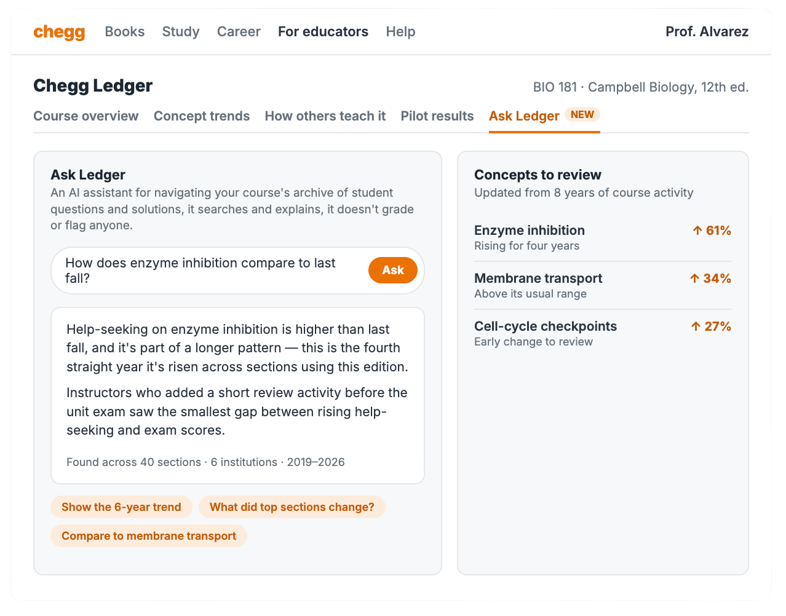

Turning years of student help-seeking patterns into useful course signals.
Chegg's core business is answers. Free AI tools give students answers faster and better now. That fight is already lost, and no version of smarter homework help wins it back.
Chegg cannot beat free AI at answers. It may still own something useful: years of data showing where students repeatedly asked for help.
Ledger turns those patterns into early course signals for instructors, departments, and publishers. Pilot schools then test whether those signals match real student performance.
Step-by-step answers used to be worth paying for. Now they are free and instant.
Instead of building another answer tool, Chegg can shift its target market, and test whether its archive of student work can become trusted course analytics.
Three ideas were cut because they did not create a real advantage.
Free tools already do this well. Chegg would still be competing on answers.
Dropped to keep one buyer and one clear reason to pay.
Search volume can reflect popularity, not difficulty. A simple ranking would be easy to misread.
Isn't this what an LMS does? An LMS measures one school's results after class starts. Ledger looks for older patterns before the semester, then asks the school's data to confirm them.
Doesn't AI already know this? AI sees public content. Chegg has private usage patterns showing which textbook concepts drew help over time.
What data would Ledger use? Search volume, step-by-step solution views, and asynchronous Ask an Expert submissions.
| Capability | Canvas / Quizlet | Chegg Ledger |
|---|---|---|
| Data source | One institution, current terms | Historical textbook and concept activity |
| Timing | After the assignment | Before the semester starts |
| Best use | Measure class performance | Show where help-seeking patterns are changing |
Ask Ledger lets an instructor ask simple questions like “How does this compare to last fall?” It searches and explains the existing archive. It does not create new data or make the underlying signal stronger.

Ledger does not treat a popular search as proof that students struggled. A concept is flagged only when repeat views and Ask an Expert follow-ups rise faster than enrollment-adjusted search volume. That helps separate “everyone was assigned this” from “students kept coming back because they were stuck.”
Chegg has years of data. The first step is a small pilot with a few high-enrollment courses. Schools can compare Ledger's signals with their own exam results before using it more widely.
Only broad course patterns should be shown, never individual students, instructors, or assignments.
Three limits shape where Ledger should start.
Courses change while Chegg's archive grows more slowly.
Response: Start with intro STEM and business courses that change slowly. Label every signal by textbook edition and time range.
A popular problem may get more searches simply because more schools assign it.
Response: Do not use searches alone. Flag a concept only when repeat views and Ask an Expert follow-ups grow faster than enrollment-adjusted search volume.
New materials and assignments may no longer match the concepts in older textbooks.
Response: Let teachers upload current course materials alongside anonymized assignment or quiz results. Ledger could connect missed questions to course concepts and show where students are struggling now.
Start with a few introductory courses and answer three simple questions.
Start with high-enrollment courses such as introductory accounting, chemistry, biology, and calculus.